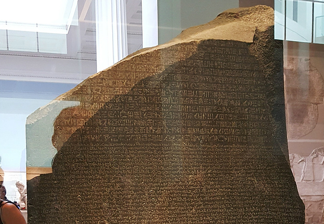
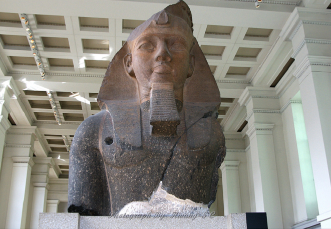
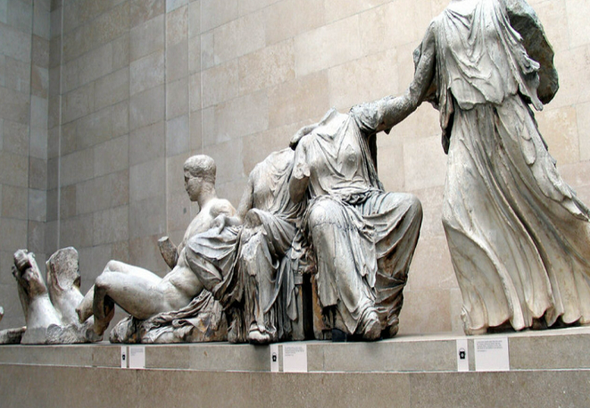
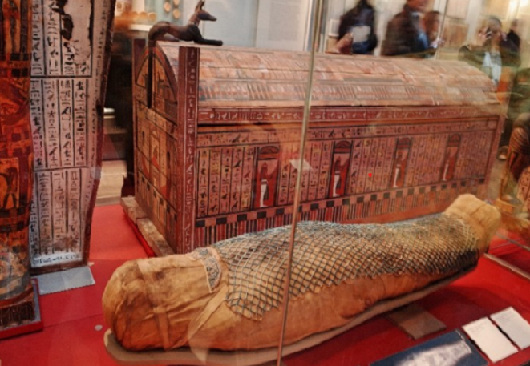

로제타석
기원전 196년 고대 이집트에서 제작되어 멤피스에 세워진 화강섬록암 석비이다.
고대 이집트어로 된 법령이 위에서부터 신성문자, 민중문자, 고대 그리스어의 세가지 문자로 번역되어 쓰여 있는 화강암이다.
이 돌에 쓰여진 그리스어를 기반으로 1822년에 장프랑수아 샹폴리옹과 토머스 영이 이집트 상형문자를 해독하였다.
람세스2세 석상
고대 이집트의 가장 유명한 파라오,
람세스 2세의 석상이다.
람사르 2세는 B.C. 1303~B.c. 1213 이집트 왕국의
전성기를 누린 파라오로 아부심벨 신전의 좌상과
더불어
록소르 신전, 카르나크 신전의 라메세움 등에
거대한 석상이 남아있다.


파르테논 신전 조각
기원전 5세기 아테나 여신을 모시기 위해 세워진 사원인 파르테논 신전의 조각품 중 일부이다. 파르테논의 웅장함은 당시 아테나의 국력을 상징한다. 신전에 조각된 조각품들은 살아 움직일 듯한 생동감이 특징이다.
미라
고대 이집트 시대 여성의 미라로 가느다란 나무조각들에 녹색 색칠을 한 후 일일이 엮은 그물 무늬 장식이 있다. 사망한 여성을 보호하는 의미로 이를 통해 고위층 여성의 미라임을 확인할 수 있다. 미라가 담겨있는 관 또한 화려하게 장식되어 있다.
